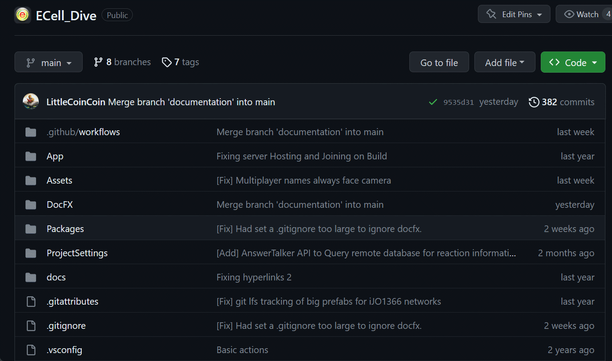
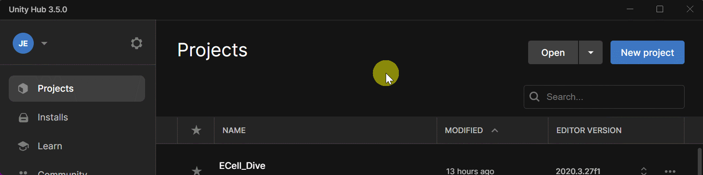
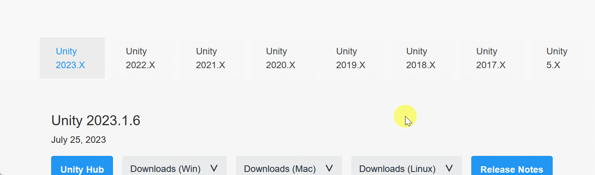
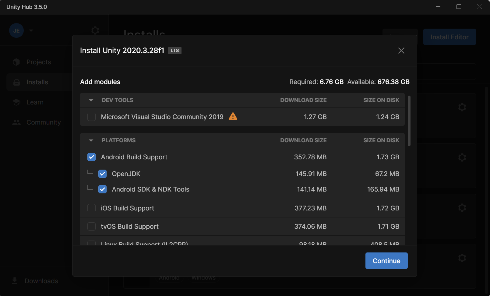
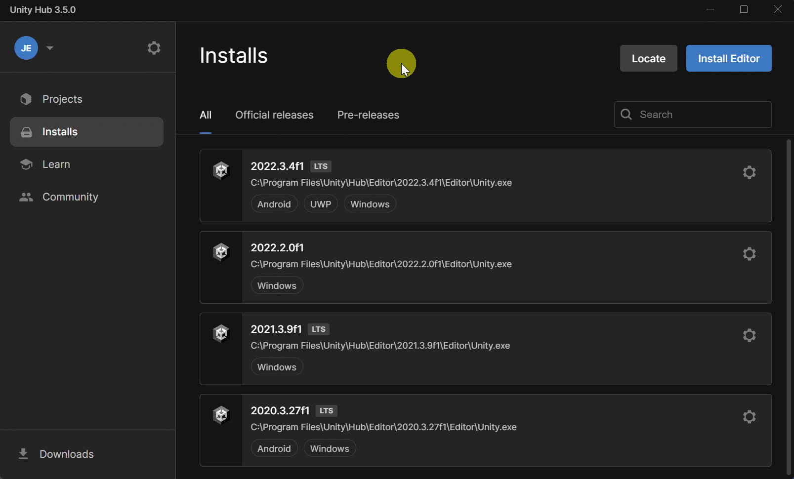

Download the zip of the project
Cloning the git repo through the https uri is possible (last tested on 2023-07-19) but it is more stable to download the zip archive of the project instead. On the github page of the code:
- click on the green button Code
- click on the button Download ZIP.
Warning
[FOR WINDOWS] If you plan on developing for the multiplayer networking, you will probably use ParrelSync in the project. ParrelSync makes clones of the whole project which involves copying files very deep in the project. If you are not careful, the paths may exceed the 260 characters limit on Windows. To work around this, we advise you put the project at a directory close to the root. Something like C:\Users\username\src. This is a known limit in ParrelSync (see FAQ and issue#13)
Once you have downloaded the archive (a few dozen Mo), unzip it (see Windows, MacOs, Linux for relevant ways) at a location of your choice.
Example Download ZIP
Download Unity
Warning
Currently, the project works with Unity 2023.3.27f1. We recommend to not open the project with a more recent version of Unity if it is not your goal to upgrade the whole project. That is because packages dependencies will be updated along in Unity 2021.X or 2022.X and this may break the project.
Download Unity Hub
Unity Hub is the official launcher application by Unity to manage your installation of Unity versions as well as start and open projects. Follow the instructions to install Unity Hub on your system.
Download version 2022.3.27f1
- Open Unity Hub.
- Click on the button Installs on the left panel.
- Click on the button Install Editor on the top right.
- Click on the tab Archive.
- Click on the link download archive.
Get To Unity Archive
- Click on the tab Unity 2020.X.
- Scroll down until you find Unity 2023.3.27 (January 31, 2022).
- Click on the button Unity Hub.
Find version 2020.3.27
- Accept to open the link with Unity Hub (this depends on your internet navigator and OS).
- In Unity Hub, make sure to select the options related to Android if you want to be able to build the application for the Meta Quest headeset series.
Mandatory options to build for Quest 2 (Android)
- Click on the blue button Continue in the bottom left corner.
- Read and Agree to the terms of use; click on the blue button Install.
Installation typically takes 10-15 minutes on a gaming laptop.
Open the project
- Open Unity Hub.
- Click on the button Projects in the left panel.
- Click on the button Open in the top right corner.
- If you click on the button itself, the file explorer of your local system should open by default.
- If you click on the arrow, a drop down will appear, giving you the choice to Add a project from disk or Open remote project.
- Navigate to where you the uncompressed folder of ECellDive is located on your system.
- If you chose option 3.1, then clicking on the "Open" should immediately trigger the opening of the project in Unity.
- If you chose option 3.2, then the project will be added to the list of project in Unity Hub and you need to click on it once more to really open it.
Open project
Opening the project for the first time might take 5 mins on a gaming laptop.